Painting & home services in Lutz, FL
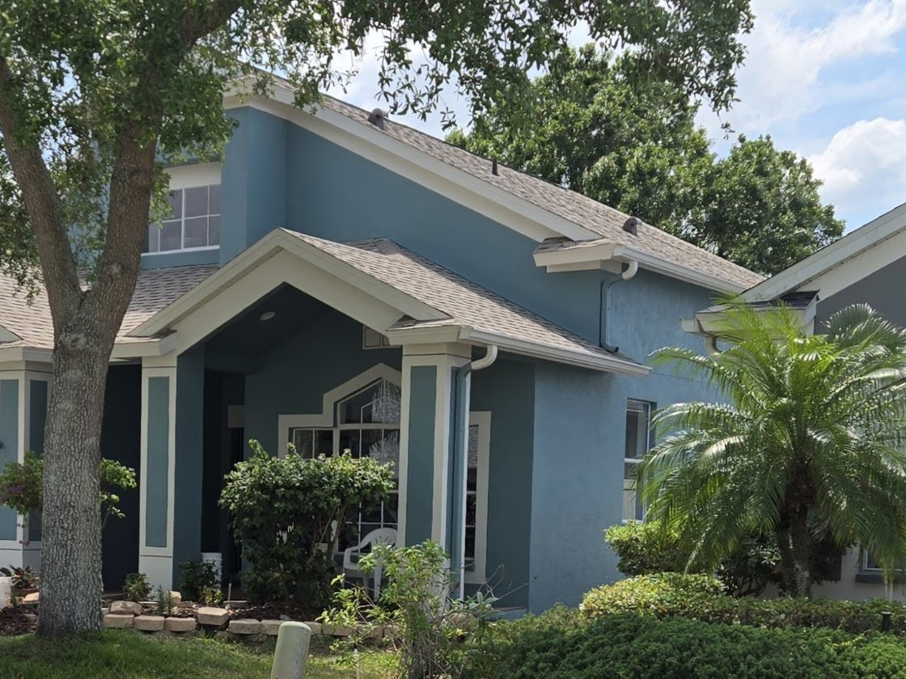
Fresh ink for your house
Exterior and interior painting, trim, fascia and window frames, siding, staircase refreshes and small repairs for homes in Lutz and the north Tampa area.
4.8 on Google- Brush
- Roller
- Stairs
- Window
- Palm
- Swallow
- Paint can
- House
The flash sheet
Six pieces on the flash sheet.
Pick the piece that matches your job. Each one is work Ink'd Painting takes on around Lutz, inside and out. Call or text and say the number.
-
No. 01
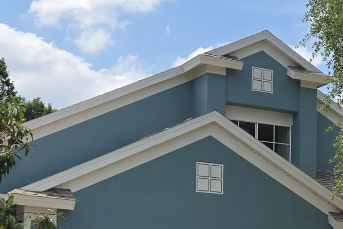
Exterior house painting
Stucco walls, gables, soffits and the white trim that frames them. The slate blue house on this page is from Ink'd Painting's own photos.
-
No. 02
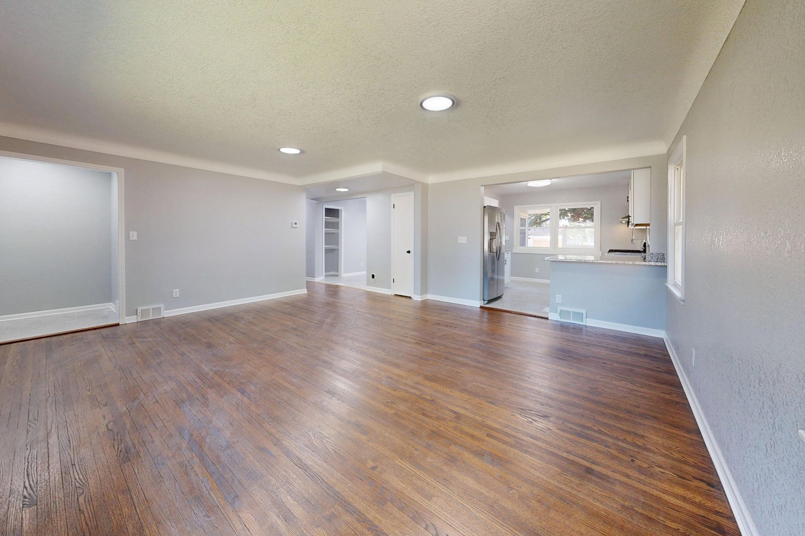
Interior painting
Walls, ceilings, doors and trim inside the house, one room or the whole floor.
-
No. 03
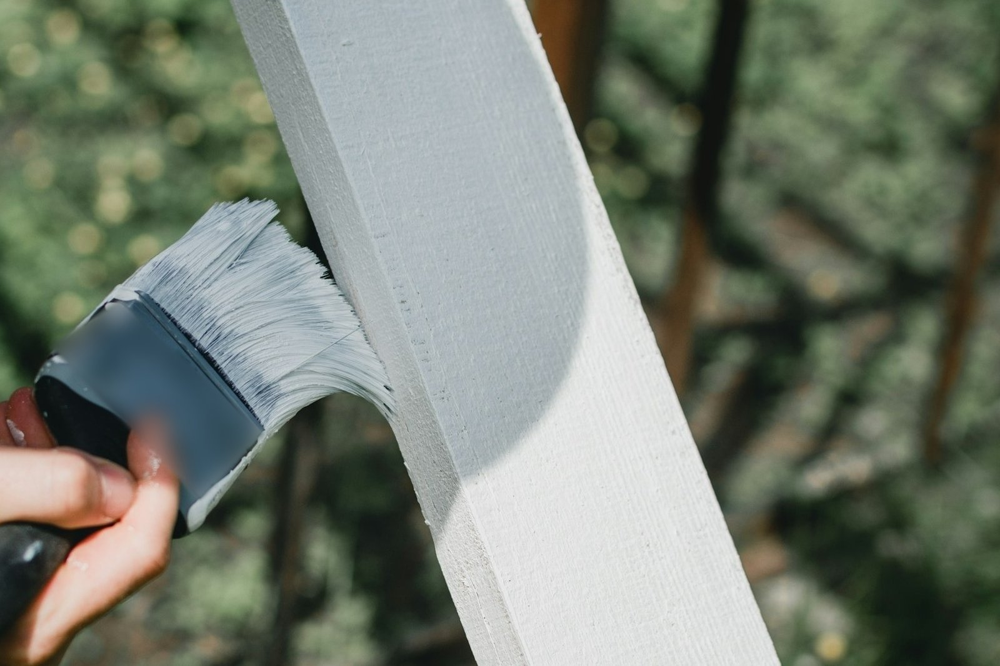
Trim, fascia & window frames
Fascia boards, window frames and trim, cut in by brush so the line between two colours stays crisp.
-
No. 04
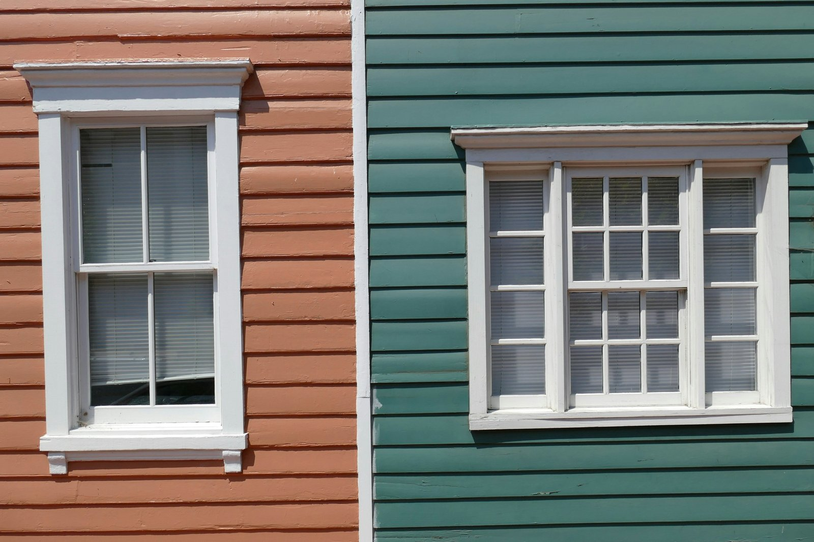
Siding painting
Lap siding brought back to one even colour, with the trim and window frames picked out against it.
-
No. 05
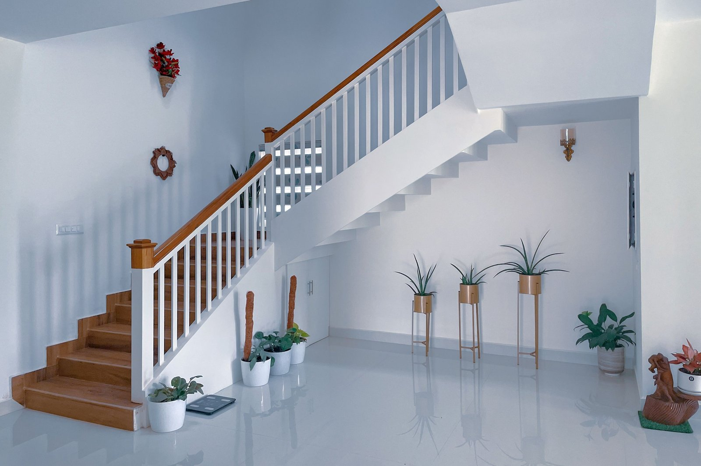
Staircase refresh
Painted risers and stained treads: the stair you walk every day, refreshed. Two of them are shown just below.
-
No. 06
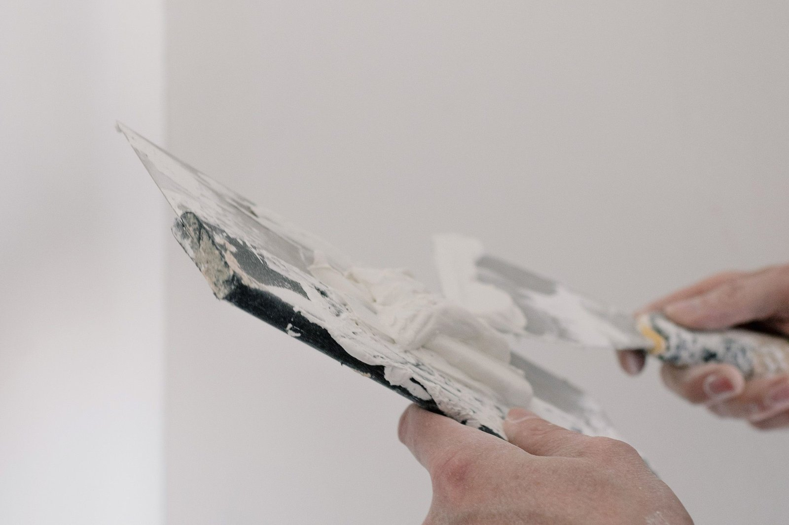
Home services & small repairs
Small repairs and home jobs around the house. Not sure if yours counts? Text a photo and ask.
Staircase refresh
Stairs, before your eyes.
Two staircases from Ink'd Painting's own photos. One is seen from the top step, the other from the floor: white risers, dark stained treads, and a white handrail and balusters kept bright beside them.
- White painted risers
- Dark stained treads
- White handrail & balusters
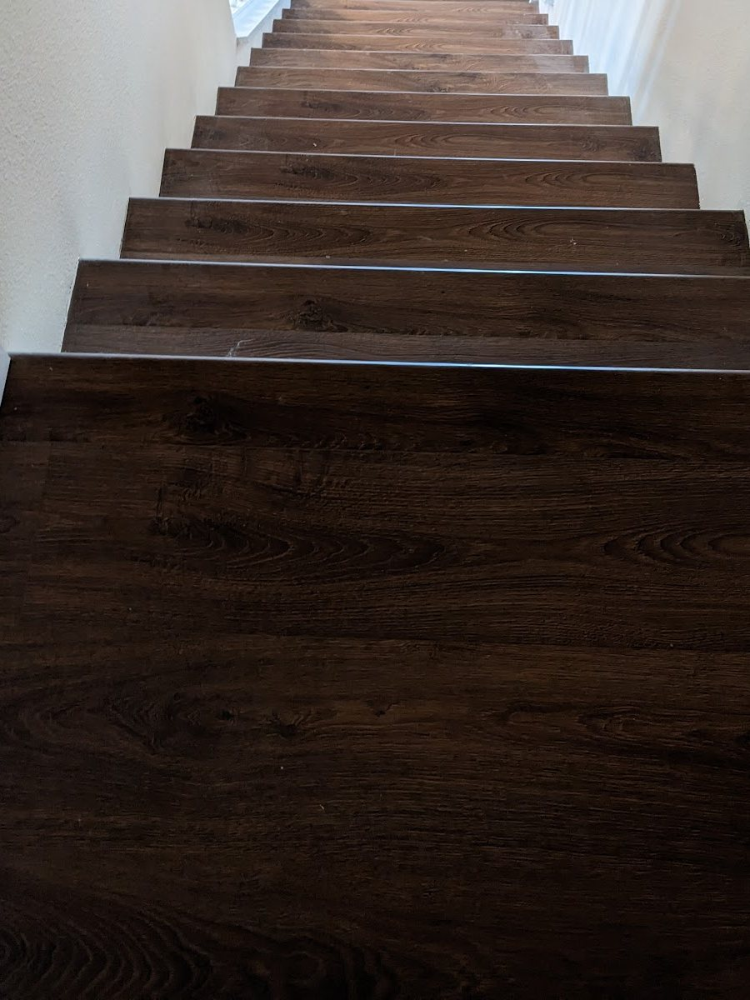
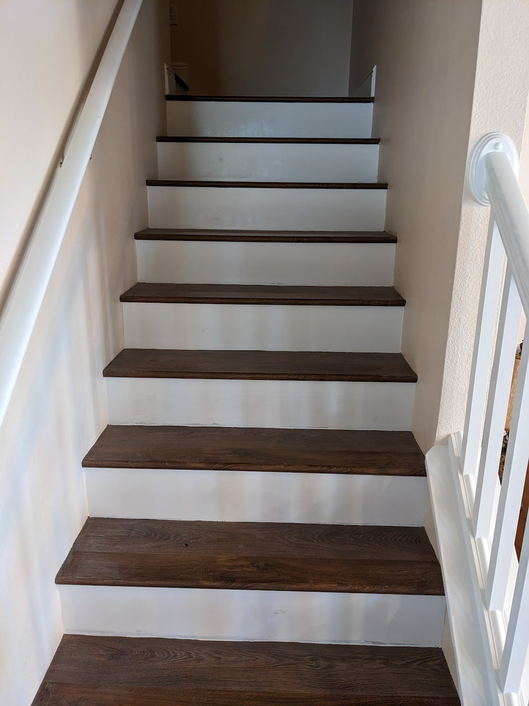
In the details
Crisp lines where colours meet.
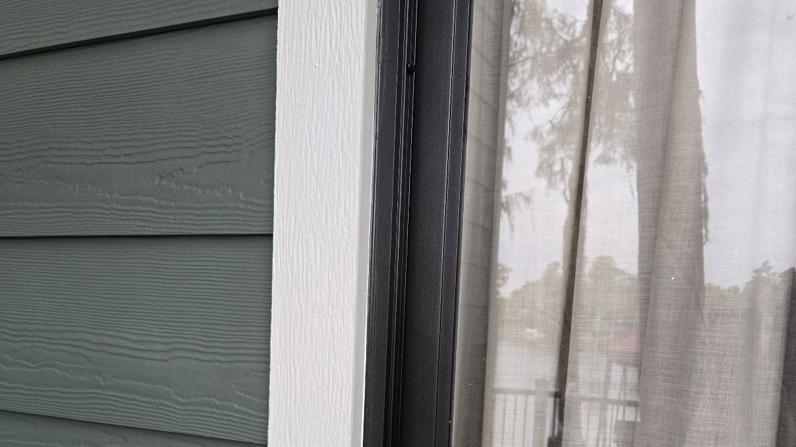
Siding, trim and window frame each get their own colour, and the edge between them is cut in by hand with a brush. On this wall the green lap siding stops at the white trim board, and the white stops cleanly at the black window frame: three colours, two straight lines, no paint where it does not belong.
Trim, fascia and window frames are piece No. 03 on the flash sheet.
Lutz · north Tampa
Ink'd Painting is based in Lutz, FL 33548 and paints homes in Lutz and the north Tampa area. Tell us your part of town when you get in touch.
- Lutz, FL 33548
- North Tampa area
- Homes, inside & out
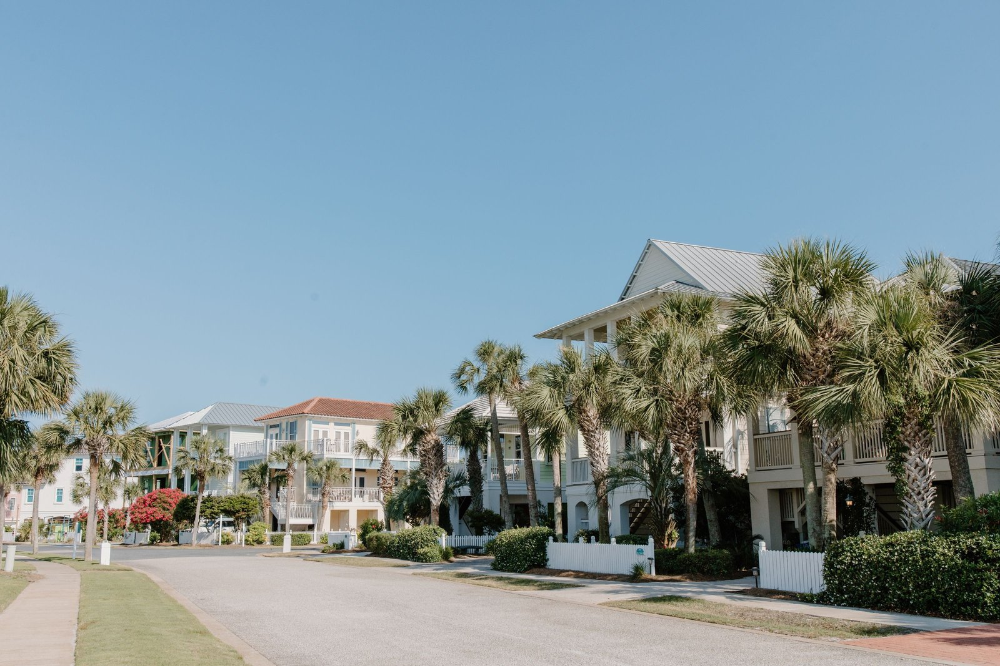
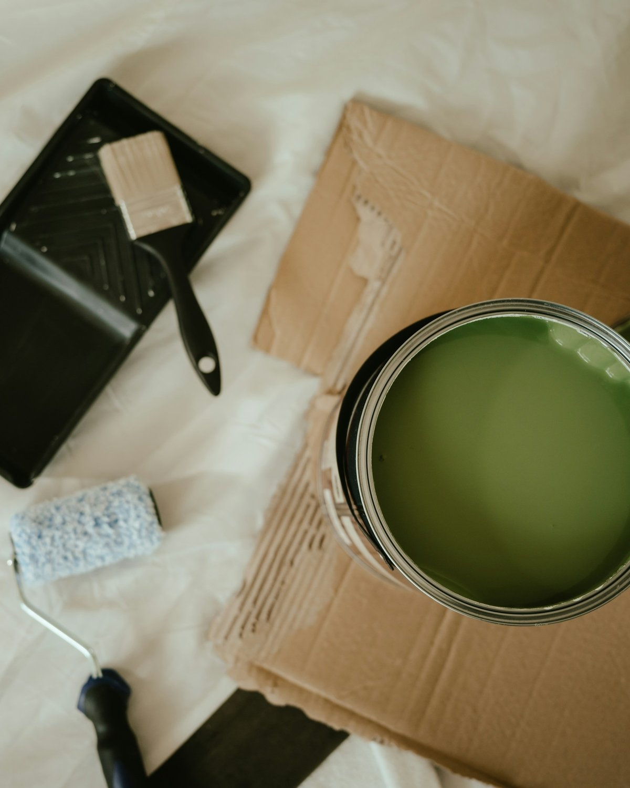
How a job goes
Four stamps, start to finish.
-
Call or text
Ring or text (813) 704-3553 and say what needs paint: rooms, the outside, trim or stairs. Photos help.
-
We look and talk colour
A look at the walls, trim and surfaces, and a talk about colours and sheen before anything starts.
-
We prep and paint
Surfaces cleaned and prepped, edges cut in by brush, then the coats go on.
-
Walk-through
We walk the job with you at the end, so you see every wall and every line before we pack up.
Get in touch
4.8 on Google. Your house next.
Call or text with the rooms, walls or trim you want painted. Photos help.
- Call(813) 704-3553
- Text(813) 704-3553
- Emailantpaints13@gmail.com
- FacebookInk'd Painting on Facebook
- AreaLutz, FL 33548 and the north Tampa area
- HoursOpen 24 hours Mon-Sat, Sunday closed, as listed on Google
Customers on Google mention interior painting and flooring.
Questions
Asked across the counter.
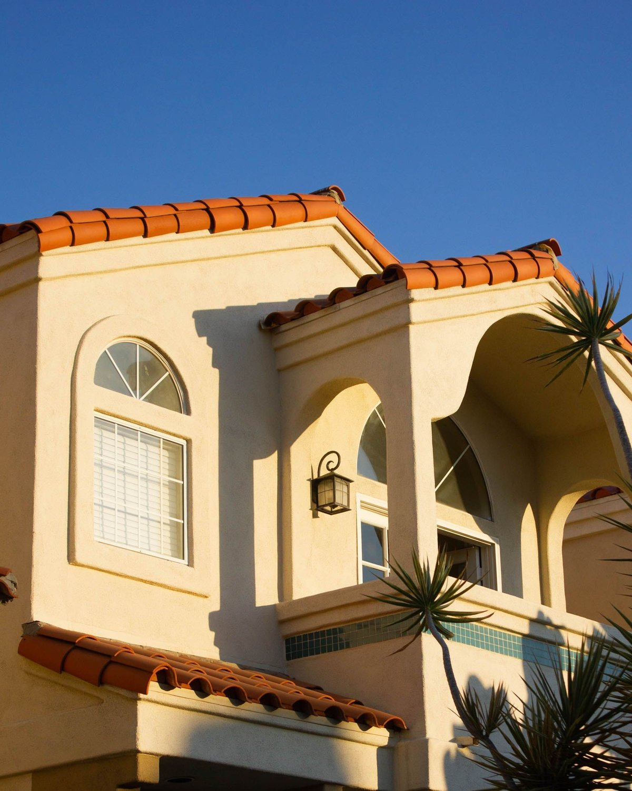
How do you handle Florida stucco and the humidity?
Stucco gets cleaned first and has to be dry before any paint goes on. Hairline cracks are looked at before the colour covers them, and outside days are planned around the rain. We talk the timing through with you when we come to look at the house.
Can you help me choose a colour?
Yes. We talk colour when we come to look: the walls, the trim, and any accent such as a front door or a garage door. A colour can look very different on your own wall in your own light, so it is worth seeing samples there before you decide.
What is a staircase refresh?
The risers, the upright face of each step, are painted, and the treads you walk on are stained. The handrail and balusters can be painted to match. The two staircase photos on this page show the look: white risers and dark treads.
Do I need to move the furniture?
We talk it through when we look at the rooms. Clearing small items, pictures and anything fragile helps. If there is heavy furniture in the way, ask us about it on the call.
What photos should I send?
A wide photo of each room, wall or side of the house, plus a close-up of anything that worries you, such as a crack, peeling trim or a worn tread. Text them to (813) 704-3553 or attach them to an email to antpaints13@gmail.com.
Something else on your mind?
Call (813) 704-3553